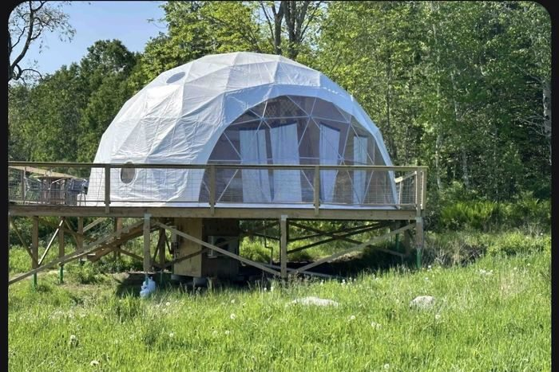

2

The quintessential Midcoast day, and the one with the highest-rated single experience of the whole trip in it. The schooner is booked and paid: an hour out past the lighthouses on a 1927 wooden vessel, back at the dock in time for lunch. Because it's only an hour, Mount Battie is no longer a trade — the only question is whether you drive the summit or walk it. Then a mile-long granite breakwater, a golden-hour lighthouse cameo, and a campfire under some of the darkest skies on the coast.
10:00a
Walk among the schooners, then find the ticket booth at 1 Bayview Landing. Public Landing parking is 2 hrs max and strictly enforced — check-in plus a 1-hr sail lands you right at the edge of it, so a longer-stay town lot is still the safer park.
10:45a
Order #170601 · 3 adults · $108.15 paid on AmEx …1004, booked Aug 4. A 1927 wooden schooner out past the lighthouses of outer Camden harbor — the highest-rated single experience anywhere on this trip. 1 hour, 10:45a–11:45a, $35 a head, back at the dock in time for lunch. Bring a layer, it is 10° cooler on the water.
11:45a
Step off the boat and eat within two blocks of it. Camden Deli at 37 Main has harbor-falls views and moves fast; Villager Cafe on Mechanic St is the quieter counter-service option. Keep it to an hour. Full picks on the 🍽 Food page.
Option A — drive the Mt Battie auto road · the relaxed version recommended
≈2 mi · ~5 min up the auto road
12:45p
~$12/vehicle, ~30 min up top, back down by 1:30p. Same postcard view over the harbor as the hike, and it leaves a full hour of slack before Rockland — worth something on day two of a trip that started at 4:45 AM.
Option B — hike Mt Battie · back on the table, but with no slack
≈2 mi · ~5 min to the trailhead
12:50p
The short cruise buys the hike back — but only just. The Carriage Road route is 2.4 mi, 564 ft, moderate, about 75 min, which lands you back at the Jeep near 2:10p and straight on to Rockland with nothing spare. The direct Mount Battie Trail is the steep one — 1.2 mi, 593 ft, AllTrails rates it hard, with a rock scramble near the top. Same summit either way.
AllTrails · Battie via Carriage Road ↗ AllTrails · Mount Battie Trail ↗
AllTrails · Battie via Carriage Road ↗ AllTrails · Mount Battie Trail ↗
Either way · the afternoon is fixed
≈12 mi · ~20 min to Rockland
2:30p

Nearly a mile out on granite blocks to the lighthouse — 1.9 mi round trip, dead flat but the blocks tilt and gap. Real shoes, watch your feet, no restrooms out there. Budget ~35 min of walking plus lighthouse time.
AllTrails · Rockland Breakwater ↗
AllTrails · Rockland Breakwater ↗
≈21 mi · ~35 min to Marshall Point
4:30p

The Forrest Gump lighthouse — run the wooden walkway. ~35 min south of Rockland at the tip of the St. George peninsula; ~50 min back up to Union after, putting you at the dome around 6:05p with plenty of evening left for the campfire. Union kitchens close at 8 — see the 🍽 Food page.
≈27 mi · ~50 min to Union
Tonight 🦙
Come Spring Farm — glamping dome
Hosted by Ana Luisa · Check-in after 3:00 PM, checkout by 10:00 AM Thu

▸ the actual dome
187 Come Spring Lane · Union, ME 04862
Campfire · stargazing · alpacas
Navigate ↗